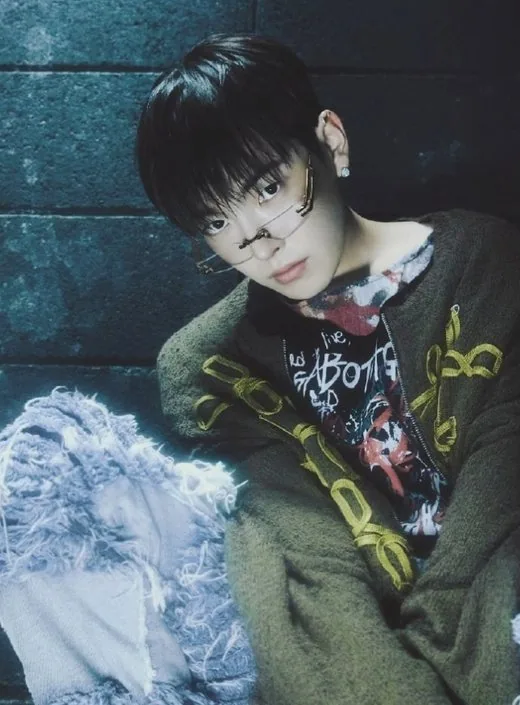
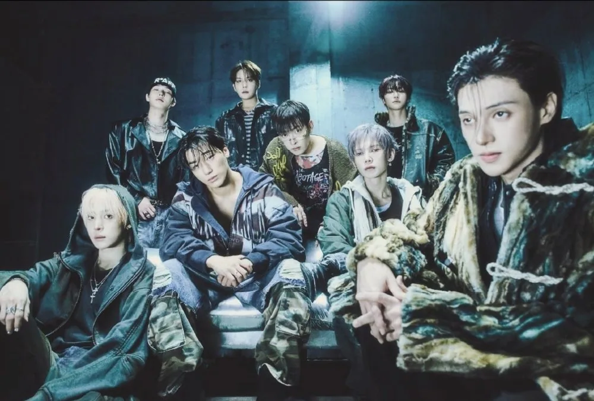
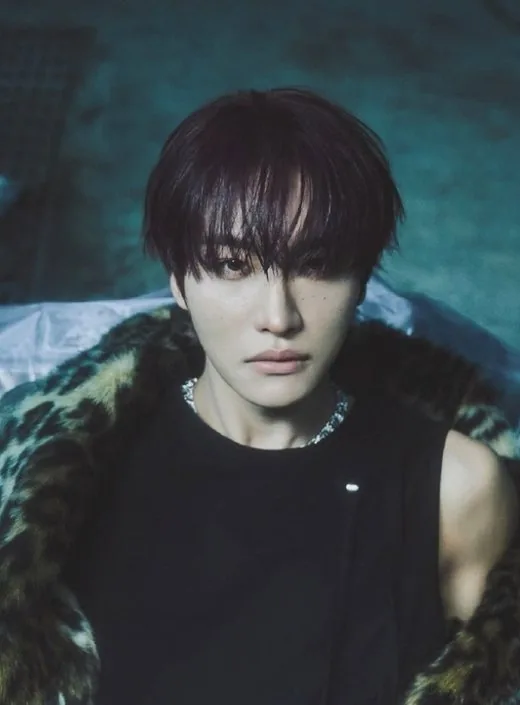
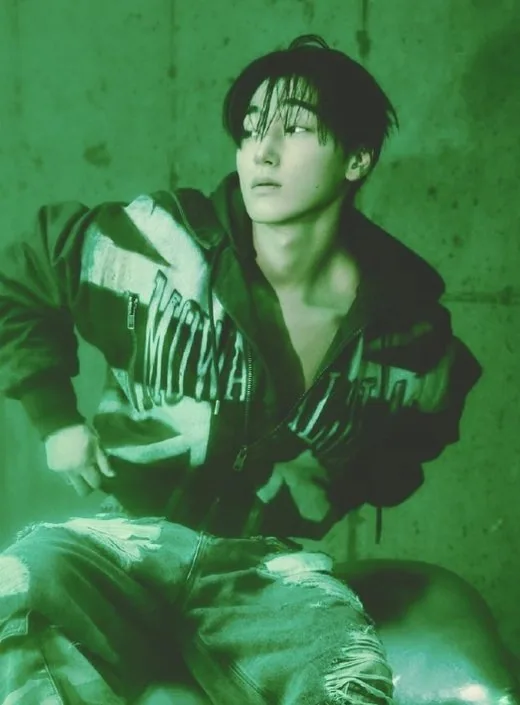
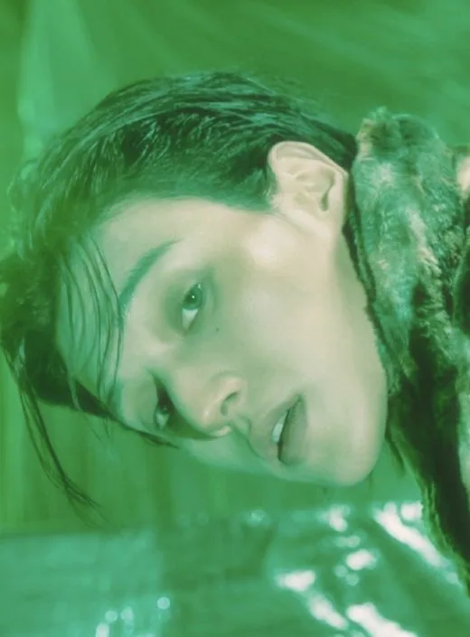
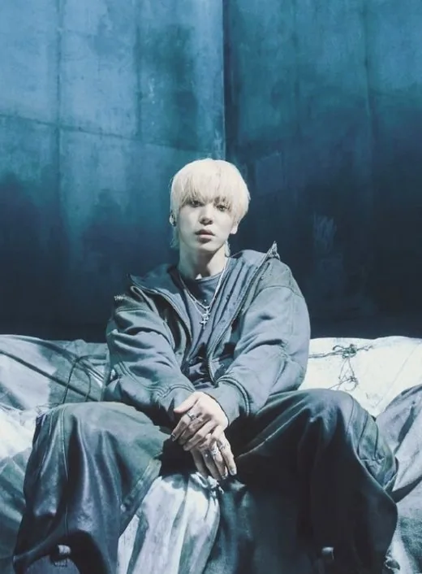

Hongjoong
Hongjoong (홍중) · Capitaine (leader), Main Rapper, Vocaliste, Compositeur, Center · Coréen

K-POP
Découvre ATEEZ et les profils de ses membres sur IBASE Asian Pop.
Ouvrir la fiche interactiveHistoire : ATEEZ est le premier boy group de KQ Entertainment. Les membres sont présentés d'abord sous le nom KQ Fellaz, avec le titre pré-début « From » en juillet 2018 (un stagiaire, Junyoung, ne fait finalement pas partie de la formation). Le groupe débute le 24 octobre 2018 avec une histoire de pirates à la recherche d'un trésor, et signe chez RCA Records (États-Unis) en juillet 2019. Le nom vient de « A TEENager Z », pour que les ados de A à Z puissent être fans. Salut officiel : « 8 makes 1 team ! ». Source : KProfiles.
Débuts : 24 octobre 2018 (mini-album « Treasure EP.1: All to Zero »)
Agence : KQ Entertainment

Hongjoong (홍중) · Capitaine (leader), Main Rapper, Vocaliste, Compositeur, Center · Coréen

Seonghwa (성화) · Vocaliste, Rappeur, Performer, Visual · Coréen
Yunho (윤호) · Main Dancer, Vocaliste · Coréen
Yeosang (여상) · Vocaliste, Performer, Rappeur, Visual · Coréen

San (산) · Main Dancer, Lead Vocaliste · Coréen
Mingi (민기) · Main Dancer, Main Rapper, Vocaliste · Coréen

Wooyoung (우영) · Main Dancer, Vocaliste · Coréen

Jongho (종호) · Main Vocaliste, Maknae · Coréen